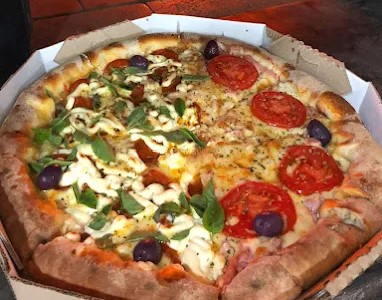
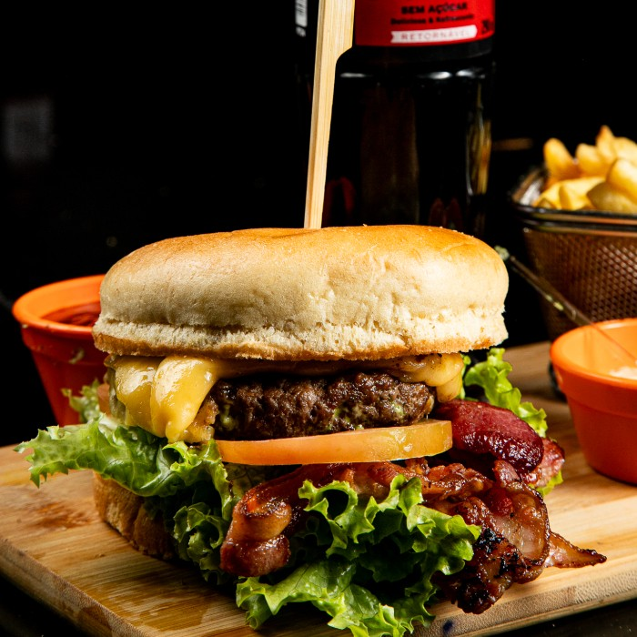

O Estradeiro
Pizzaria & Hamburgueria
Somos o O Estradeiro Restaurante Pizza & Burger, um espaço pensado para quem busca boa comida, qualidade e um ambiente agradável. Trabalhamos com refeições caseiras, pizzas artesanais, lanches saborosos e porções bem servidas, sempre preparados com ingredientes selecionados e muito cuidado.

Nossos Produtos
Somos o O Estradeiro Restaurante Pizza & Burger, um espaço pensado para quem busca boa comida, qualidade e um ambiente agradável. Trabalhamos com refeições caseiras, pizzas artesanais, lanches saborosos e porções bem servidas, sempre preparados com ingredientes selecionados e muito cuidado.
Nosso compromisso é oferecer uma experiência completa, com atendimento atencioso e pratos que agradam toda a família. Seja para uma refeição no local ou para viagem, estamos prontos para receber você!
